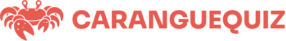

Caranguejos
Sobre Nós
Qual caranguejo você é?
Eu sei que você sempre quis saber. Essa é a hora da verdade!
Qual é a sua atividade preferida em um dia de folga?
Ler um livro tranquilamente
Praticar esportes ao ar livre
Assistir a um filme ou série
Passar tempo com amigos ou familiares
Como você costuma reagir diante de desafios?
Enfrento-os com confiança e determinação
Procuro ajuda e orientação para superá-los
Analiso cuidadosamente as opções antes de agir
Evito desafios sempre que possível
Qual é a sua abordagem em relação a novas experiências?
Adoro experimentar coisas novas e emocionantes
Prefiro manter minha rotina confortável
Gosto de novidades, desde que sejam planejadas com antecedência
Fico cauteloso e relutante em experimentar algo novo
Como você lida com conflitos interpessoais?
Sou direto e expresso minhas opiniões sem rodeios
Procuro um compromisso que atenda às necessidades de todos
Busco uma solução pacífica e diplomática
Evito conflitos e tento manter a paz a todo custo
Qual é a sua atitude em relação a mudanças repentinas?
Adaptar-se rapidamente e abraçar as mudanças
Ficar desconfortável, mas eventualmente aceitar as mudanças
Sentir-se ansioso e resistir às mudanças
Preferir uma rotina estável e evitar mudanças
Como você se sente em grandes aglomerações?
Adoro estar rodeado de pessoas e me sinto energizado
Gosto de estar com um grupo pequeno e íntimo de amigos
Depende do meu estado de espírito no momento
Sinto-me desconfortável e prefiro evitar grandes multidões
Qual é a sua abordagem em relação ao planejamento futuro?
Gosto de fazer planos detalhados com antecedência
Prefiro deixar as coisas fluírem naturalmente
Planejo até certo ponto, mas também gosto de ser flexível
Não gosto de pensar muito no futuro, vivo o presente
Como você costuma lidar com o estresse?
Procuro atividades relaxantes, como meditação ou ioga
Encontro alívio ao conversar com amigos ou entes queridos
Foco na resolução dos problemas que estão causando estresse
Tento evitar situações estressantes ou me distrair com outras atividades
Qual é a sua atitude em relação a regras e normas?
Sigo as regras rigorosamente e espero que os outros também o façam
Acredito que as regras podem ser flexíveis em certas situações
Seguir regras é importante, mas algumas podem ser questionadas
Tenho uma abordagem mais descontraída e nem sempre sigo as regras à risca
Como você se sente em relação a situações de risco?
Gosto de correr riscos e buscar novas emoções
Procuro equilibrar segurança e aventura
Evito situações de risco sempre que possível
Sinto-me desconfortável e evito qualquer tipo de risco
Qual é a sua abordagem em relação a críticas construtivas?
Aceito críticas abertamente e busco melhorar com elas
Fico na defensiva, mas considero as críticas se forem válidas
Levo em consideração as críticas, mas nem sempre concordo com elas
Tenho dificuldade em lidar com críticas e costumo ficar chateado
Como você costuma recarregar suas energias?
Ficar sozinho em um ambiente tranquilo
Passar tempo com amigos ou entes queridos
Participar de atividades físicas ou esportivas
Realizar hobbies ou atividades criativas